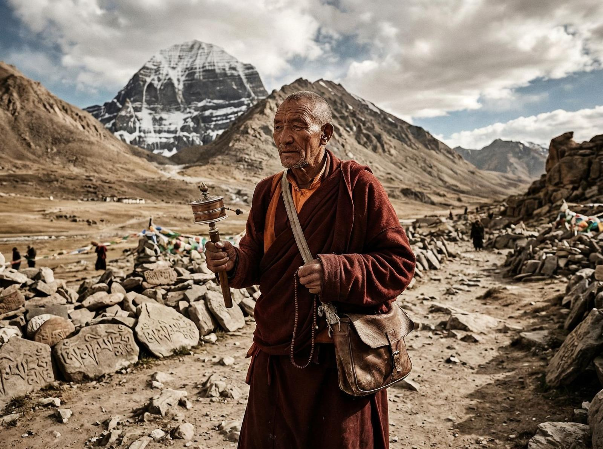
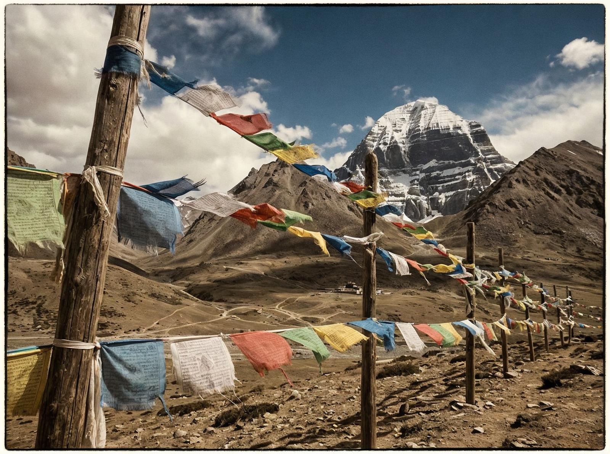

Dacă tragi o linie dreaptă pe o hartă între Tibet și Nepal, Kailash apare ca un punct negru pe fundalul unui ocean de zăpadă. E un munte. Dintre multe altele. Numai că are câteva proprietăți care nu au ce căuta într-un munte.
Pentru început, forma. Kailash nu arată ca un munte obișnuit, erodat de milioane de ani de vânt și gheață. Arată ca o piramidă perfectă. Patru fețe care se întâlnesc într-un vârf exact. Unghiuri care sunt prea regulate pentru a fi naturale. Și o orientare pe cele patru direcții cardinale care e, statistic vorbind, improbabilă.
Ține minte detaliul ăsta: piramida e formată din trei niveluri distincte. Fiecare nivel este o terasă plată, înconjurată de pante abrupte. Arată ca o structură artificială, ca și cineva ar fi construit-o în straturi.

Dar nu e artificială. Geologii care au analizat roca spun că e naturală. E doar că natura a făcut ceva ce, în mod normal, ar fi făcut oamenii. Și asta e prima problemă.
A doua problemă e înălțimea. Kailash are 6.638 metri. Nu e cel mai înalt munte din lume — Everestul are 8.848 metri. Dar Kailash e singurul munte la această înălțime pe care nimeni nu a reușit să-l urce. Nu e o problemă tehnică. Alpinii care au încercat spun că urcarea în sine nu e imposibilă. Problema e altceva.
Fiecare expediție care a încercat să ajungă în vârf s-a întors înainte să-l atingă. Nu din cauza vremii, nu din cauza lipsei de oxigen, nu din cauza unui accident. Au întors din cauza unei senzații persistente: nu trebuie să ajungă în vârf. Ceva îi oprește.

Și acum vine partea ciudată — pentru că nu e doar o senzație. E un pattern.
În 1998, o echipă rusească a încercat să urce Kailash. A fost pregătită. Avea oxigen, echipamente moderne, alpiniți experimentați. Au ajuns la 6.500 metri. Și s-au oprit. Cei care au fost acolo spun că, la un moment dat, temperatura a scăzut brusc. Nu gradual, așa cum se întâmplă în mod normal la altitudini înalte. Brusc. De la -20°C la -40°C în câteva minute. Vântul a crescut. Și a apărut o senzație de greutate, ca și cum gravitația ar fi crescut.
Echipa a decis să se retragă. Nu a fost o decizie rațională — a fost o decizie de supraviețuire. Au coborât. Și, odată coborâți, totul s-a normalizat.
Știința zice: fenomene meteorologice locale, efect de umbră, reacție psihologică la altitudine extremă. Realitatea, însă, e că fenomenele astea se întâmplă doar în jurul Kailash. Nu pe Everest, nu pe K2, nu pe niciun alt munte de 6.000+ metri. Doar aici.
Și totuși, Kailash e considerat sacru de patru religii: budismul, hinduismul, jainismul și bonismul. Fiecare religie are o explicație diferită pentru de ce nu trebuie urcat. Pentru hinduși, Kailash e locul unde locuiește Shiva. Pentru budiști, e locul unde Buddha a atins iluminarea. Pentru jainiști, e locul unde primul tirthankara a atins eliberarea. Pentru boniști, e centrul universului.
Explicația religioasă e simplă: nu urci un munte sacru pentru că nu e necesar. Meritul nu e în vârf, e în drum spre vârf. Și călcând pe vârf, profani ceva care ar trebui să rămână pur.
Ține minte detaliul ăsta: pelerinii care fac circumambulația — drumul în jurul muntelui, care are 52 de kilometri — spun că experiența e transformatoare. Că simt o energie, o prezență, ceva ce nu pot explica. Cei care o fac de mai multe ori spun că sensația devine mai puternică cu fiecare tur.
Știința zice: e doar efectul înălțimii, al efortului, al așteptării. Realitatea, însă, e că circumambulația Kailash nu e ca orice alt pelerinaj. Oamenii care au făcut pelerinaje în alte locuri sacre spun că Kailash e diferit. Nu doar ca simbol, ci ca experiență fizică.
În 2001, o echipă de cercetători chinezi a venit să măsoare câmpul electromagnetic din jurul Kailash. Au descoperit că există o anomalie: câmpul e mult mai puternic în zona muntelui decât în zonele înconjurătoare. Nu suficient de puternic ca să afecteze oamenii, dar suficient de puternic ca să poată explica unele dintre fenomenele raportate — schimbări bruste de temperatură, vânturi locale, senzatii de greutate.
Problema e că anomalia nu e constantă. Uneori e puternică, alteori e normală. Și nimeni nu a reușit să identifice pattern-ul.
Există și alte teorii. Cea mai populară spune că Kailash e un obiect artificial, o piramidă antică de dimensiuni uriașă, acoperită de gheață și zăpadă de milioane de ani. Cei care cred în asta spun că structura piramidală, orientarea cardinală, și terasele plate sunt prea perfecte pentru a fi naturale. Cei care nu cred în asta spun că e doar o coincidență geologică — calcarul s-a erodat în moduri care arată artificial, dar nu sunt.
Nu știu cum să explic asta, dar problema cu ambele teorii e că niciuna nu acoperă toate datele. Dacă Kailash e natural, cum să explice forma piramidală și orientarea cardinală? Dacă e artificial, cum să explice faptul că geologii nu au găsit nicio urmă de construcție — nicio mortar, nicio unealtă, nicio structură internă?
Pentru localnici, răspunsul e simplu: Kailash e ce trebuie să fie. Un munte sacru. Un loc pe care nu îl înțelegem și care, probabil, nu e menit să fie înțeles. Cei care încearcă să-l urce încalcă o regulă care nu e scrisă nicăieri, dar care e respectată de toți.
Și poate că asta e misterele real al Kailash: nu de ce nu poate fi urcat, ci de ce există atâtea religii care cred că nu trebuie să fie urcat. Poate că, la un nivel pe care nu îl putem accesa, ceva ne-a transmis mesajul: aici e linia. Nu treceți.
Probabil că nu vom ști niciodată sigur. Kailash va rămâne un munte pe care nimeni nu l-a urcat și pe care nimeni nu va urca. Un sacru imposibil, un paradox natural, un semn pe care nu îl putem citi.
Nu știu ce înseamnă asta. Dar știu că e fascinant.